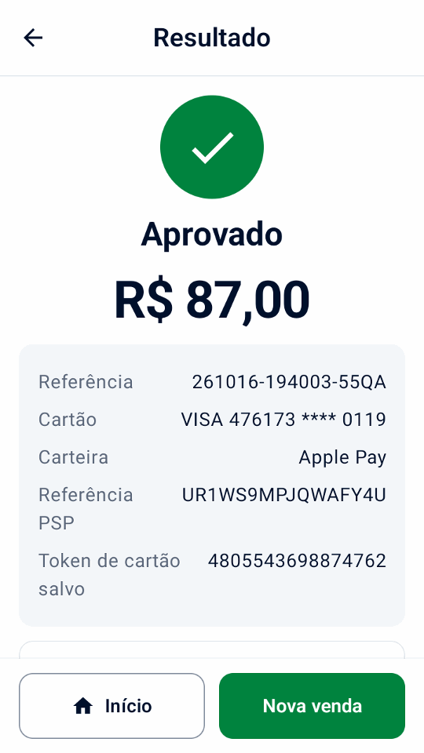

Guia
Experimente a demonstração
Experimente uma venda, um recibo e um reembolso de exemplo sem conta Adyen ou terminal.
Instale o aplicativo
Use um celular ou emulador com Android 9 ou posterior.
- No dispositivo, abra o link
de download direto ou leia este código com a câmera:

- Abra o APK no dispositivo e permita a instalação a partir do seu navegador ou gerenciador de arquivos quando o Android solicitar.
- Na tela de boas-vindas, selecione Experimente uma demonstração e toque em Continuar.
Faça uma venda e um reembolso de exemplo
- Na tela inicial, toque em Nova venda e escolha um produto de exemplo.
- Toque em Cobrar, confira o total e toque em Pagar.
- Confira o recibo.
- Abra Histórico, escolha a venda e toque em Reembolsar. Selecione o reembolso total e confirme.


Explore outros cenários
- Em Configurações › Simulador, escolha o resultado do pagamento, o atraso e se há impressora. Ative Aprovações off-line para ver os avisos off-line no histórico e na conciliação do terminal.
Em Configurações › Dados e transferência, use Adicionar dados de amostra ou Remover dados de amostra. As amostras são marcadas como demonstração e entram nos totais e relatórios dos dias de demonstração; adicioná-las substitui os dados do estabelecimento no recibo por um café fictício e adiciona o logotipo dele, se não houver um. Removê-las mantém seus próprios produtos, histórico, configurações e logotipo.
Os links de pagamento funcionam off-line sem credenciais de API, e suas telas e recibos são marcados como demonstração. Os QR codes deles não recebem pagamentos; toque em Simular pagamento para concluir um.
O simulador mostra como o Mini mPOS se comporta, não o que seu terminal ou sua conta Adyen aceitam. Recursos como orientação por áudio, aprovações off-line e capacidades da Adyen são imitados, então teste-os em um terminal TEST real antes de depender deles.
A demonstração também oferece gorjetas no terminal e o Adyen Giving no pagamento, com as chaves desligadas, e um cartão-presente SVS em Cartões-presente. O histórico de amostra mostra uma gorjeta, uma doação, uma aprovação off-line e um cartão salvo para a referência de cliente CUST-1042, que você pode cobrar em Tokens. Em Configurações › Simulador, defina uma Sobretaxa ou uma Aprovação parcial (%) abaixo de 100 para testar esses fluxos; em 100, valores terminados em 139 são aprovados em parte, como no cartão de teste da Adyen. Ao configurar pagamentos reais, o Mini mPOS oferece desativar esses recursos da demonstração, a menos que você os mantenha.
Continue para a configuração real
Pronto para conectar? Em Configurações › Simulador, toque em Configurar pagamentos reais e depois em Continuar com a configuração. Confirmar TEST ou LIVE exclui todo o histórico local; produtos de amostra e dados do recibo permanecem, então remova as amostras e revise os dados do estabelecimento antes de pagamentos reais. Comece com TEST.